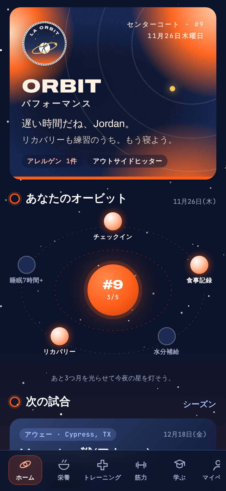
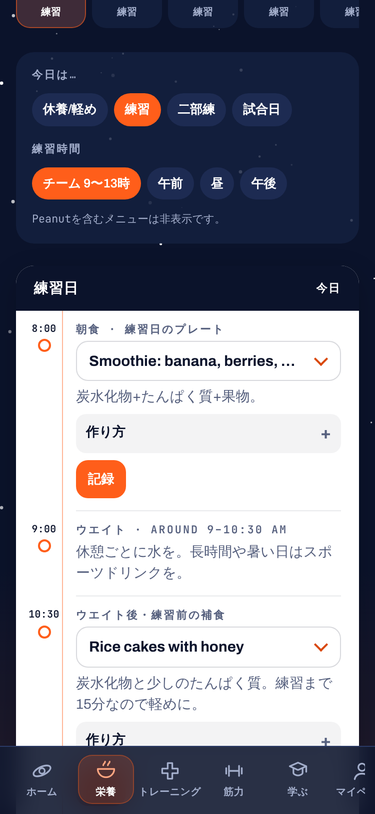

npadu22.github.io/LOVB-LA を開くだけ。App Store、アカウント、パスワードは不要です。

ホームの月をタップして記録。3つ以上で今夜の星が灯り、7つの星で今週の星座が完成します。
毎朝15秒:睡眠、筋肉痛、エネルギー、気分、ストレス、そして昨日の回復に役立ったこと。
1食以上を記録。食事プランからなら記録をタップするだけ。
最初にボトルサイズを設定し、1本飲み終えるたびに+ボトル1本をタップ。1日の目標量で月が光ります。
したことをタップ:睡眠、昼寝、リカバリー食、アイシング、冷水浴、ストレッチ、治療など。
7時間以上眠れたらタップ。
連続記録や節目で獲得できるピンはマイページに。ウエイト自己ベストのKillから8時間以上の睡眠のPancakeまで全12種類。毎週月曜日、ホームに先週のまとめが表示されます。

チーム全体のプログラム、ポジション別のプログラム、そしてEmmaがあなた専用に配信するプログラム。
プログラム上部の1日目、2日目…をタップ。種目は練習前、練習、練習後に分かれています。
各種目の完了にするをタップ。動画があればデモを見るで再生。あなたのコードは「あなたのプログラム」の下に表示。
Emmaからには最新のお知らせが表示されます。練習前と遠征前にチェック。
筋力タブでウエイト1〜4かコンディショニングをタップ。種目はCaíque Bothelo がポジション別に設定。デモを見るで動きを確認。
重量×回数を入力してセットを記録。前回の記録も表示されます。終わったら終了をタップ。コンディショニングではきつさ(RPE 1〜10)と時間を入力。
あなたの進歩で種目ごとにシーズンを通したグラフ、ベスト重量、推定1RM、伸び率を表示。ベストを更新すると自己ベストのスタンプが出ます。
ホーム › その他 › 水分補給。ボトルサイズ(16〜40 oz)と1日の目標を選択。目安は約80 oz、暑い日・長い練習・二部練の日はもっと多めに。
今日か昨日にしたことを記録。記録と毎朝のチェックインを約1週間続けると、あなたに効くことで調子の良い朝の前日の習慣がわかります。
ホーム › その他 › 月経周期。経血量と症状を記録すると、周期日と次の生理の予測が表示されます。プライベート:データはスマホの中だけ。いつでも削除できます。
学ぶ › RDに質問:質問を入力すると、管理栄養士が確認した回答が出典付きで表示されます。見つからなければワンタップで管理栄養士に送信。ライブラリには短いレッスン、ツールにはプレートとサプリメントチェック(USADA推奨の認証のみ)。
マイページにはプロフィールカード(食事スタイル)、ピンコレクション、カラー、背景、試合日テーマ、大きめの文字、言語設定、スタッフと共有される内容があります。★の食事は管理栄養士があなたのために選んだものです。
チェックイン、食事、水分、ウエイト、コンディショニングは、管理栄養士・アスレティックトレーナー・ストレングスコーチだけが開ける非公開シートに自動で送られます。月経周期、メモ、写真、アレルギーはスマホの中だけです。
痛み、腫れ、頭への衝撃、気になることがあればその日のうちにEmmaへ。3か月以上生理が来ない、疲れが続く、サプリメントの疑問は管理栄養士へ。
インストール · 登録 · 最初のチェックイン(First Touch獲得) · 食事を記録 · トレーニングを開く
不具合や要望は ホーム › その他 › アプリへの意見 から管理栄養士に届きます。
※ レッスン、レシピ、都市ガイド、スタッフの投稿は現在英語のままです。